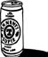

\1\2ğaç\3
James Bond’un en sevdiği içki hangisiydi?

Votka martini değildi.
Fleming’in tüm külliyatıyla ilgili www.atomicmartinis.com adlı internet sitesinde yapılan özenli çalışma, James Bond’un ortalama olarak her yedi sayfada bir içki içtiğini göstermektedir.
İçtiği toplam 317 içkiden en çok tercih ettiği, açık arayla viskidir. Toplamda 101 viski içer, bunlardan 58’i bourbon, 38’i scotch’tur. Şampanyaya da oldukça düşkündür (30 bardak) ve çoğunluğu Japonya’da geçen You Only Live Twice [İnsan İki Kere Yaşar] (1964) kitabında Japon likörü dener. Bu içkiyi de beğenir ve 35 tane içiverir.
Bond, favorisi sanılan votka martiniyi sadece 19 kez tercih eder ve neredeyse aynı miktarda cin martini de içmiştir (16 adet, gerçi bunların çoğunu başkaları ısmarlamıştır).
Ünlü “çalkalanmış olsun, karıştırılmış değil” lafı ilk kez Diamonds are Forever [Ölümsüz Elmaslar] (1956) kitabında geçer, fakat Dr No [Doktor No] (1959) kitabına kadar Bond tarafından kullanılmaz. Sean Connery, “çalkalanmış olsun, karıştırılmış değil” lafını kullanan ilk beyazperde Bond’udur (Goldfinger [Altın Parmak] [1964] filminde) ve bundan sonraki filmlerin çoğunda bu tekrar eder. 2005’te American Film Institute bu cümleyi tüm zamanların en iyi 90. alıntısı seçti.
James Bond’un, ilk kitap olan Casino Royal’deki (1953) şahsi martini tarifi şöyledir: “Üç ölçü Gordon’s, bir ölçü votka ve yarım ölçü Kina Lillet. Buz gibi olana kadar iyice çalkala ve büyük, ince bir limon dilimi ekle.”
Bu cin ve votka karışımını tek içişidir. Bu karışıma, romandaki, ikili oynayan ajan ve Bond’un aşığı Vesper Lynd’in adından dolayı Vesper adını verir. Bu kadın tüm roman ve hikâyelerdeki kadınlar arasında en çok içki içendir.
Bond neden “çalkalanmış” martinide ısrar eder? Doğruyu söylemek gerekirse, çalkalanmış cin martiniye Bradford adı verilir. Bu işin üstatları buna kızarlar, çünkü çalkalamadan kaynaklanan hava girişi cindeki lezzeti oksitlendirir – ya da “çürütür.” Fakat votka için bu sorun yoktur, çalkalamak içkiyi daha soğuk ve sert hale getirir.
Ian Fleming’in kendisi de martinisini cinle birlikte ve çalkalanmış tercih ederdi. Hayatının ilerleyen yıllarında doktorunun isteğiyle cin yerine bourbon içmeye başladı ki, bu, yarattığı kahramandaki değişimi de açıklayabilir. Fleming de, Bond da ne sevdiklerini bilen adamlardı.